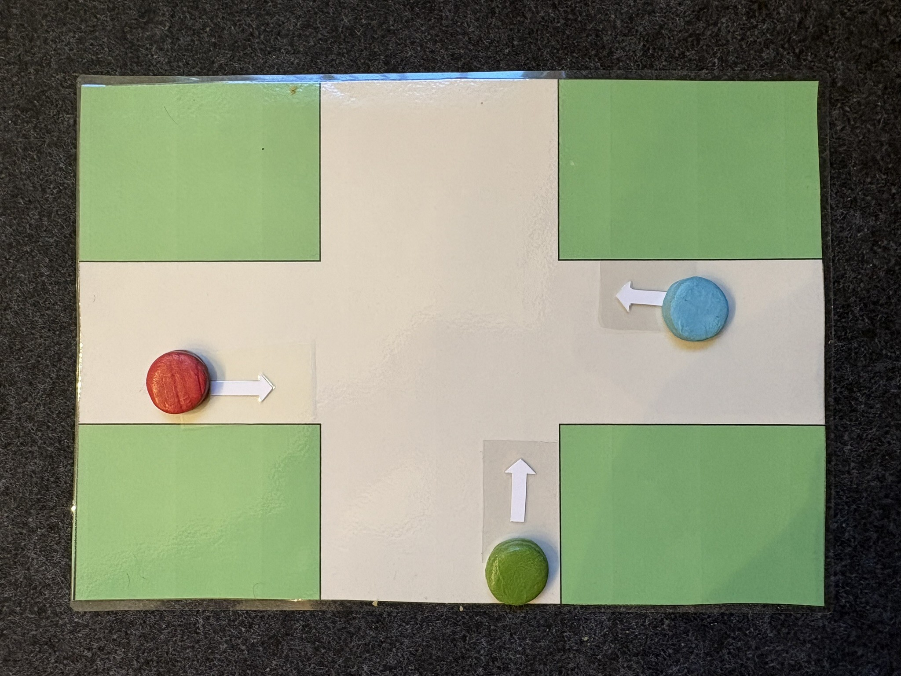
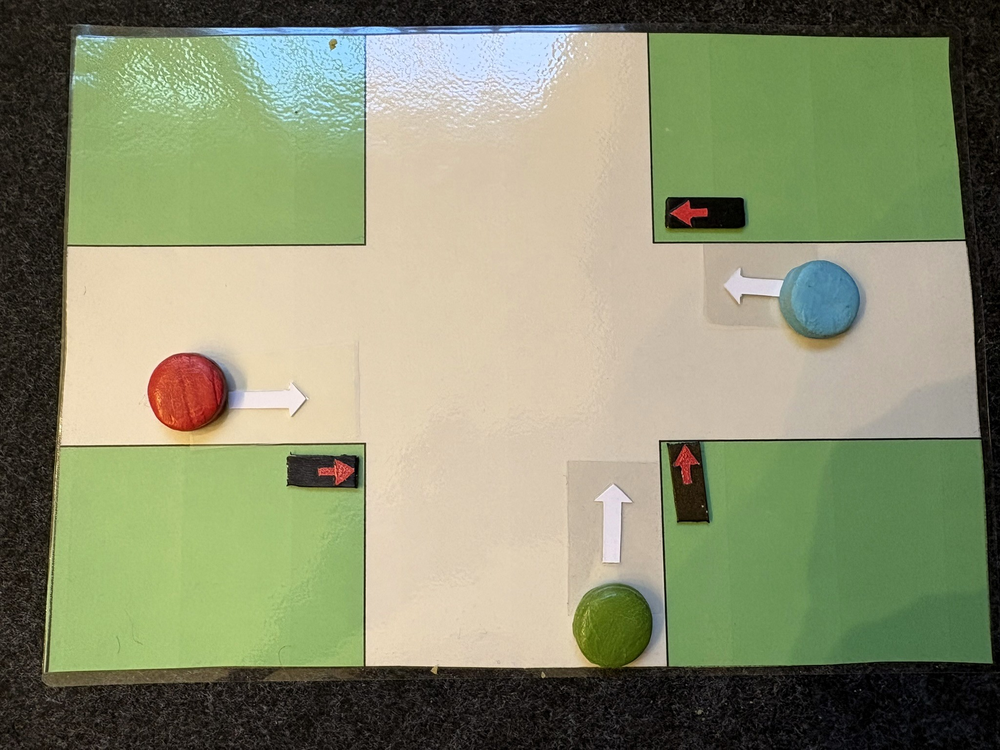

Enaktiver Einstieg
Der enaktive Einstieg macht Verkehrssicherheit zuerst handelnd erfahrbar. Lernende legen Autos, verändern Ampeln und beschreiben sichere Zustände, bevor die formale Wahrheitstabelle eingeführt wird.
Material
| Material | Hinweis |
|---|---|
| Kreuzungsfeld | mit Klebeband auf dem Tisch oder als Ausdruck |
| Fahrzeuge | 3 bis 4 Spielzeugautos pro Gruppe |
| Ampelkarten | pro Spur eine rote und eine grüne Karte |
| Richtungskarten | geradeaus, links, rechts |
| Druckvorlage | Enaktives Material herunterladen |
Konfrontationsaufgabe
KA1 - Situation 4 enaktiv nachspielen
Ziel
Die Lernenden beurteilen eine Verkehrssituation intuitiv und merken, dass kleine Änderungen neue Sicherheitsfragen erzeugen. Diese Irritation bereitet die spätere formale Modellierung vor.
Ablauf
| Schritt | Auftrag |
|---|---|
| 1. Situation legen | Legt die Fahrzeuge auf die Kreuzung. Beispiel: D fährt von Süden geradeaus, E von Westen geradeaus, C von Osten geradeaus. |
| 2. Sicherheit entscheiden | Legt Ampelkarten so, dass die Situation sicher ist. |
| 3. Sichere Zustände beschreiben | Formuliert mündlich oder schriftlich, welche Ampelkombinationen sicher sind. |
| 4. Veränderung auslösen | Verändert ein Auto oder eine Fahrtrichtung und prüft, ob die Lösung noch sicher ist. |
| 5. Reflexion | Besprecht, warum Intuition allein schnell unübersichtlich wird. |


Hinweise für die Durchführung
- Noch keine logischen Fachbegriffe einführen.
- Nur die gelegte Situation betrachten.
- Lernende dürfen Autos bewegen und mögliche Kollisionen ausprobieren.
- Ziel ist nicht die perfekte Regel, sondern das Bedürfnis nach einer vollständigen Übersicht.
Erarbeitungsaufgabe
EA1 - Kreuzung eindeutig beschreiben
Ziel
Die Lernenden wechseln von der gelegten Situation zur fachlichen Struktur: Variablen, Zustände und vollständige Kombinationen.
Ablauf
| Schritt | Auftrag |
|---|---|
| 1. Problem formulieren | Warum reicht es nicht, nur einzelne sichere Fälle zu nennen? |
| 2. Kombinationen zählen | Wie viele Rot-Grün-Kombinationen gibt es bei drei Autos? |
| 3. Tabelle anlegen | Erstellt eine leere Tabelle mit den Spuren als Spalten. |
| 4. Sicherheit ergänzen | Markiert für jede Kombination sicher oder unsicher. |
| 5. Begriff sichern | Führt den Begriff Wahrheitstabelle ein. |
Anschluss
Für weitere Arbeit mit Tabellen eignet sich Wahrheitstabellen im Unterricht. Für den Übergang ins Online-Tool passt Einführung Online Lernumgebung.